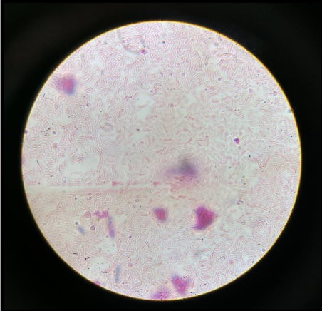
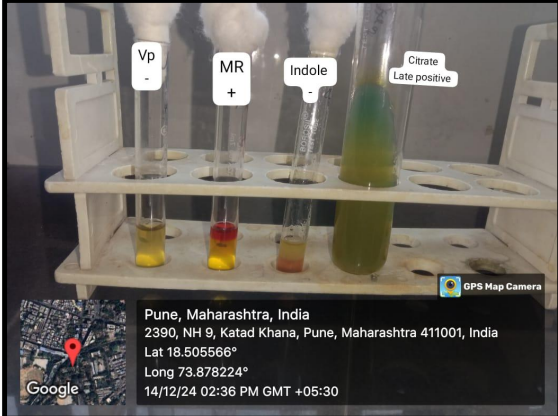

Research Paper
Abeda Inamdar Senior College
Department of Biotechnology
Abstract
Background: Multidrug resistant organisms (MDROs) are microorganisms that have developed resistance to multiple antibiotics, making them difficult to treat with conventional antimicrobial therapies. The washroom environment is a common place where people come into contact with various microorganisms, including MDROs. In recent years, there has been a growing concern about the presence of MDROs in washroom environments, including toilets, sinks, and floors.
Objective: The objective of studying multi-drug resistance organisms (MDROs) from washroom environments is to understand the presence, distribution, and transmission of MDROs in these environments, and to develop effective strategies to prevent and control the spread of these organisms.
Materials & Methods: Outlines the experimental approach, which involves sample collection from washroom environment, processing and testing of the sample. In which Gram staining of isolated colonies was done to distinguish between the Gram positive and Gram negative bacteria. Also motility test was performed. After the basic procedures the biochemical characterization was done to identify and characterize the isolated organisms. After identification the Antibiotic susceptibility testing was done to determine the resistance and sensitivity of the identified organisms. The biofilm formation of the identified organisms was done. Based on results obtained from the above procedures the organism found to be MDR were further proceed for RT- PCR for genetic sequencing of the organisms.
Results: The study successfully identified multidrug-resistant organisms (MDROs) in washroom environments, particularly from toilets, sinks, and floors. After isolating and characterizing the organisms using Gram staining, motility tests, and biochemical analysis, the identified organisms included Pseudomonas spp., Staphylococcus spp., and Serratia spp. Antibiotic susceptibility testing revealed varying resistance patterns, with some organisms showing significant resistance to common antibiotics. Biofilm formation was observed, suggesting the potential for increased persistence and transmission of these MDROs. Genetic analysis via RT-PCR is currently in process to further confirm the multidrug resistance traits of these organisms. Preliminary results indicate that Pseudomonas spp. and Serratia spp. are the primary MDROs present in the washroom environment, highlighting the need for improved hygiene and antimicrobial control measures in these high-risk areas.
Conclusion: This study underscores the significant presence of multidrug-resistant organisms (MDROs) in washroom environments, highlighting a potential public health risk due to frequent human contact with contaminated surfaces. The isolation of Pseudomonas spp., Staphylococcus spp., and Serratia spp., alongside their varying resistance profiles, suggests that common washroom areas may serve as reservoirs for these resistant pathogens. Biofilm formation further complicates the issue, as it enhances the persistence and spread of MDROs. While antibiotic susceptibility testing provides insight into the resistance patterns, the ongoing RT-PCR analysis will offer a deeper understanding of the genetic mechanisms behind this resistance. This research emphasizes the need for improved sanitation protocols and more effective antimicrobial strategies to limit the spread of these organisms in high-risk environments, such as public washrooms. Furthermore, regular monitoring and further studies are essential to track the dynamics of MDROs in such settings and to inform better hygiene practices. Future research should focus on developing novel disinfectants or antimicrobial coatings specifically designed to target biofilm-forming MDROs in washroom environments. Additionally, exploring the genetic mechanisms of resistance through further RT-PCR studies could provide insights for developing targeted interventions to combat these pathogens effectively.
KeyWords: Multidrug-resistant organisms (MDROs), washroom environment, antibiotic resistance, biofilm formation, Gram staining, motility test, biochemical characterization, RT-PCR, genetic sequencing, infection control.
Introduction
The washroom environment is a common area where individuals come into contact with various microorganisms, including bacteria, viruses, and fungi. Some of these microorganisms, known as multi-drug resistant organisms (MDROs), pose a significant public health threat. These MDROs have developed resistance to multiple antibiotics, making them difficult to treat using conventional antimicrobial therapies.
What are MDROs? MDROs are microorganisms resistant to multiple antibiotics, which can include bacteria, viruses, or fungi. These organisms can be found in diverse environments, including hospitals, communities, and washrooms. Some of the most concerning MDROs found in washrooms include methicillin-resistant Staphylococcus aureus (MRSA), vancomycin-resistant enterococci (VRE), and extended-spectrum beta-lactamase (ESBL)-producing bacteria.
Why Should We Be Concerned? While washrooms are commonly associated with personal hygiene, they can also serve as breeding grounds for harmful pathogens, including antibiotic-resistant bacteria. These organisms can spread through direct contact with contaminated surfaces, as well as indirect transmission from one surface to another. In some cases, certain bacteria can even become airborne, facilitating further contamination within or outside the washroom.
Sources of MDROs in Washroom Environment: MDROs can be found in various washroom surfaces such as:
- Toilet handles, which can harbor MDROs and transfer them to hands and other surfaces.
- Sinks and faucets, where bacteria may spread through water and hand contact.
- Floors, which can be contaminated and serve as carriers of MDROs through foot traffic and cleaning activities.
- Air, where MDROs can be aerosolized, leading to airborne transmission.
Transmission Routes: MDROs can spread in washrooms through:
- Direct contact: With contaminated surfaces or objects.
- Indirect contact: When MDROs transfer from one surface to another.
- Airborne transmission: MDROs can be spread through the air, especially in poorly ventilated areas.
Prevention and Control Measures: To limit the spread of MDROs in washrooms, the following strategies are essential:
- Proper hand hygiene: Regular handwashing and use of hand sanitizers.
- Cleaning and disinfection: Regular cleaning of high-touch surfaces like toilet handles, sinks, and floors.
- Proper ventilation: Improving airflow to reduce airborne transmission.
- Education and awareness: Educating individuals on the risks of MDROs and proper hygiene practices.
Applications of MDRO Research: Understanding and controlling MDROs has significant implications across multiple fields:
- Antibiotic Development: Studying MDROs helps in developing new antibiotics targeting resistant bacteria.
- Infection Control: Impacts infection control practices in healthcare settings, influencing protocols and cleaning strategies.
- Public Health: MDROs pose a public health risk, highlighting the importance of surveillance and preventive measures.
- Clinical Practice: Healthcare professionals must understand MDROs to use appropriate diagnostic and treatment strategies.
This study aims to explore the prevalence of bacterial contamination in public washrooms, with an emphasis on understanding the spread and control of MDROs. Previous studies have shown contamination in washrooms, with Gram-positive staphylococci and Gram-negative bacteria such as Serratia marcescens and Pseudomonas aeruginosa being prominent. The presence of multidrug-resistant bacteria underscores the need for stringent hygiene measures in these high-risk environments.
Hypotheses
- Washrooms facilitate the spread of strong germs: We hypothesize that washrooms, especially high-traffic ones, contribute to the growth and transmission of multi-drug resistant organisms (MDROs).
- Contact with washroom surfaces can lead to illness: We propose that touching commonly used surfaces such as toilet handles, sinks, and faucets in washrooms increases the risk of exposure to harmful pathogens.
- Poor ventilation in washrooms promotes the spread of germs: We believe that inadequate air circulation in washrooms creates conditions that allow airborne germs to spread more easily.
- Good hygiene practices reduce the spread of germs: We hypothesize that frequent handwashing and proper cleaning of surfaces can significantly reduce the transmission of MDROs in washrooms.
- Innovative cleaning tools can combat the spread of strong germs: We suggest that the development and use of new cleaning technologies, such as antimicrobial coatings and advanced cleaning tools, may help mitigate the spread of harmful microorganisms in washroom environments.
Literature Review
Introduction
When we think of washrooms, we usually associate them with hygiene and cleanliness. However, these spaces can be breeding grounds for harmful microorganisms, including multidrug-resistant organisms (MDROs). These bacteria, fungi, and viruses have become resistant to multiple antibiotics, making them difficult to treat and posing a growing public health threat. Public washrooms, with their high traffic and frequent contact with surfaces like sinks, faucets, and toilets, can be hotspots for these resistant microbes. This literature review aims to shed light on the presence of MDROs in washroom environments, their impact on human health, and strategies to control their spread.
Prevalence of MDROs in Washroom Environments
Numerous studies have highlighted the concerning presence of MDROs in washrooms. A study by Zhao et al. (2019) found that washrooms in public places, especially in high-traffic areas, have a variety of harmful organisms like Methicillin-resistant Staphylococcus aureus (MRSA), Vancomycin-resistant Enterococci (VRE), and Extended-Spectrum Beta-Lactamase (ESBL)-producing bacteria. These pathogens are often found on commonly touched surfaces such as door handles, faucets, and toilet seats, which increase the risk of transmission to individuals who come into contact with them.
Kramer et al. (2006) also identified that both Gram-positive and Gram-negative bacteria are prevalent in washrooms. These include Staphylococcus aureus and Pseudomonas aeruginosa, two bacteria known for their antibiotic resistance. The study emphasized that washrooms with heavy foot traffic were more likely to be contaminated with a higher load of these pathogens, demonstrating the link between human activity and microbial contamination.
Sources and Routes of Transmission
MDROs in washrooms are transmitted mainly through direct and indirect contact. Surfaces like toilet handles, sinks, and faucets can harbor these resistant organisms, which are then transferred to hands. People can unknowingly spread these microorganisms when they touch other surfaces or parts of their body, such as the mouth or eyes, which are common entry points for infections.
A study by Wong et al. (2016) found that touching contaminated surfaces, particularly toilet flush handles and door handles, increased the chances of MDRO transmission. Moreover, in some situations, when toilets are flushed, water droplets can become aerosolized, potentially spreading MDROs through the air. This makes poor ventilation in washrooms a significant risk factor for airborne transmission.
Biofilm Formation and Persistence of MDROs
One of the most worrying features of MDROs in washrooms is their ability to form biofilms. Biofilms are clusters of bacteria that stick to surfaces and form a protective barrier, making them resistant to antibiotics and cleaning efforts. Pseudomonas aeruginosa and Staphylococcus aureus are known for their biofilm-forming abilities, allowing them to survive on washroom surfaces for extended periods. According to Nielsen et al. (2015) and Ghosh et al. (2017), these biofilms can make it much harder to remove these harmful organisms from surfaces. Even thorough cleaning might not eliminate biofilm-associated bacteria, which means they can continue to spread and cause infections. This persistent presence of bacteria in washrooms, even after cleaning, complicates infection control efforts.
Antibiotic Resistance Patterns
MDROs are concerning because they are resistant to multiple antibiotics, which limits treatment options. For example, Staphylococcus aureus and Enterococcus faecalis found in washrooms are resistant to methicillin, vancomycin, and penicillin. Similarly, Pseudomonas aeruginosa, Serratia marcescens, and other Gram-negative bacteria show resistance to broad-spectrum antibiotics, such as carbapenems.
Research by Bautista et al. (2018) demonstrated that MDROs isolated from washroom surfaces exhibited high resistance to the commonly used antibiotics, making these infections more challenging to treat. Furthermore, Gonçalves et al. (2020) reported that some bacteria, like Serratia marcescens, not only displayed resistance to antibiotics but also to common disinfectants used in washrooms. This highlights the urgent need for new methods of disinfecting these spaces and treating infections caused by these organisms.
Prevention and Control Strategies
Given the significant presence of MDROs in washrooms, preventing their spread is crucial. The primary methods for controlling the transmission of these pathogens include proper hand hygiene, regular surface cleaning, and improved ventilation.
Hand hygiene is essential in reducing the spread of MDROs, and frequent hand washing with soap or the use of hand sanitizers can help prevent contamination. Regular cleaning and disinfecting of high-touch areas like faucets, toilet handles, and floors are also critical. Studies by Prussin et al. (2017) suggest that enhancing ventilation in washrooms can reduce the airborne transmission of these pathogens, particularly in poorly ventilated spaces.
Public health campaigns that educate the public on the importance of good hygiene practices are also vital. Antimicrobial coatings on frequently touched surfaces and biofilm-targeting disinfectants may help mitigate the spread of MDROs by targeting these resilient bacteria.
Conclusion
The presence of MDROs in washroom environments is a growing public health concern. These organisms, including Staphylococcus aureus, Pseudomonas aeruginosa, Serratia marcescens, and others, exhibit resistance to commonly used antibiotics, making them difficult to treat. Biofilm formation further complicates efforts to eliminate these organisms from surfaces. To reduce the transmission of MDROs in washrooms, comprehensive infection control measures such as improved cleaning practices, enhanced ventilation, and better public education on hand hygiene are needed.
Further research is necessary to develop more effective disinfectants that target biofilm-forming MDROs and to explore new ways to combat antibiotic resistance in these environments. Continued monitoring and innovative strategies will help curb the spread of these resistant organisms, ultimately safeguarding public health.
Methods and Materials
Sample Collection
A sample was collected from a washroom environment using sterile swabs. These swabs were transported to the laboratory in saline solution for further microbiological analysis.
Sample Processing and Testing
The collected swabs were first spread on Nutrient Agar (NA) plates using a loopful of the sample suspended in saline. These plates were incubated at 37°C for 24 hours. After incubation, isolated colonies were observed and selected colonies were subcultured onto fresh NA plates for further testing. To differentiate between lactose fermenting (LF) and non-lactose fermenting (NLF) organisms, MacConkey agar (Mac medium) was also used for detection and visualization.
Gram Staining
Gram staining is a differential staining technique used to classify bacteria into Gram-positive and Gram-negative based on their cell wall characteristics. The process involves a series of staining steps that include:
- Primary Staining: Bacterial cells are initially stained with crystal violet, turning them deep purple.
- Mordant Application: Iodine is used as a mordant to form a crystal violet-iodine (CV-I) complex inside the cells.
- Decolorization: An alcohol or acetone-alcohol solution removes the primary stain from Gram-negative bacteria, while Gram-positive bacteria retain the CV-I complex.
- Counterstaining: Safranin is used to stain the decolorized Gram-negative bacteria red or pink, while Gram-positive bacteria remain purple or blue.
Requirements: Crystal violet, Safranin, Acetone alcohol, Gram’s iodine, clean grease-free slide, Nichrome wire loop, and bacterial suspension.
Protocol:
Prepare a thin smear on a clean, grease-free slide, air dry, and heat fix. Stain with crystal violet for 1 minute and rinse. Apply Gram’s iodine for 1 minute and rinse. Decolorize with acetone-alcohol until no more violet color comes off and rinse. Counterstain with safranin for 2 minutes, rinse, air dry, heat fix, and observe under an oil-immersion lens (100X).
Motility Test
The motility test checks if microorganisms can move using structures like flagella. Movement is observed using a cavity slide under a microscope.
Requirements: Clean grease-free cavity slide, grease-free cover slip, loopful of bacterial suspension, microscope.
Protocol:
In an aseptic condition, place a loopful of suspension on a clean grease-free cavity slide. Use lubricant to gently place a grease-free cover slip over the cavity. Observe under a microscope at 10X and 45X objective lenses to detect bacterial movement.
BIOCHEMICAL CHARACTERIZATION
Certain biochemical tests were performed crucial for the identification of pathogens which helped to distinguish between different species and strains of microorganisms based on their metabolic capacities. By checking how microorganisms utilize specific substrates or produce particular byproducts, these tests provide valuable clues for identifying unknown isolates.
Referring to Ananthanarayan and Paniker’s Textbook of Microbiology, the following biochemical tests were performed for the identification:
Key used to perform further biochemical tests of isolated organisms
Table: Key for inoculating biochemicals
| Sr. No. | Code | Name of organism | Biochemical tests |
|---|---|---|---|
| 1 | A | E. coli / Klebsiella | Indole, MR, VP, Citrate, TSI |
| 2 | B | Enterococci (Streptococcus faecalis) | Glucose, 40% Bile |
| 3 | C | Shigella | Glucose, Indole, Mannitol, TSI |
| 4 | D | Pseudomonas | Oxidase, Catalase, Gelatinase, Nitrate reduction, Glucose, Dettol Agar, Decarboxylase (lysine, ornithine, arginine) |
| 5 | E | Salmonella / Proteus | Glucose, Xylose, Mannitol, Citrate, TSI, H2S, Urease, Gelatinase |
| 6 | F | Vibrio | Glucose, Mannitol, Oxidase, Gelatinase, Indole, Choline reduction test |
| 7 | G | Staphylococcus | Glucose (aerobic & anaerobic), DNAse, Catalase, Coagulase, Mannitol, VP |
| 8 | H | Streptococcus | Glucose, Mannitol, VP, Catalase, Hemolysis, Glucose azide broth |
Biochemical Characterization
Certain biochemical tests were performed which are crucial for the identification of pathogens and help distinguish between different species and strains based on their metabolic capacities. These tests provide valuable clues for identifying unknown isolates.
Referring to Ananthanarayan and Paniker’s Textbook of Microbiology, the following biochemical tests were performed:
IMViC Tests
1. Indole Test
Principle: Tryptophan is hydrolyzed by tryptophanase to indole, pyruvic acid, and ammonium. Indole reacts with Kovac’s reagent to form a cherry red ring.
Requirements:
- 1% Tryptone or 2% Peptone water
- Kovac’s reagent and xylene
- Test culture
Protocol:
- Inoculate culture in medium.
- Incubate at 37°C for 24 hrs.
- Add xylene and Kovac’s reagent. Observe red ring.
2. Methyl Red (MR) Test
Principle: Detects stable acid end-products from glucose fermentation. Red color indicates positive result.
Requirements:
- Glucose phosphate broth
- Methyl red indicator
- Test culture
Protocol:
- Inoculate glucose broth.
- Incubate at 37°C for 24 hrs.
- Add methyl red. Observe red color.
3. Voges-Proskauer (VP) Test
Principle: Detects acetoin production which forms red diacetyl in presence of alpha-naphthol and KOH.
Requirements:
- Glucose phosphate broth
- Barritt’s reagent (α-naphthol & 1% KOH)
- Test culture
Protocol:
- Inoculate glucose broth.
- Incubate at 37°C for 24 hrs.
- Add Barritt’s reagent. Observe red color.
4. Citrate Utilization Test
Principle: Tests ability to use citrate as sole carbon source. Color shift from green to blue confirms positive result.
Requirements:
- Koser's citrate broth or Simmons citrate agar
- Bromothymol blue indicator
- Test culture
Protocol:
- Inoculate citrate medium.
- Incubate at 37°C for 24 hrs.
- Observe for blue color change.
5. Triple Sugar Iron (TSI) Test
Principle: Detects sugar fermentation and H2S production. Color changes and black precipitate indicate positive result.
Requirements:
- TSI agar slant
- Test culture
- Incubator
Protocol:
- Inoculate slant and butt of TSI tube.
- Incubate at 37°C for 18–24 hrs.
- Observe color changes and blackening.
5. Biofilm Formation
Principle: Bacteria form biofilms via stages: initial attachment, adhesion, colonization, maturation, and dispersion.
Requirements:
- Nutrient broth
- Sterile tubes or 96-well plate
- Crystal violet (0.1%)
- PBS (Phosphate Buffered Saline)
- 33% acetic acid
- Microplate reader
Protocol:
- Inoculate nutrient broth with colony.
- Incubate at 37°C for 48 hrs.
- Stain with crystal violet for 10 mins.
- Wash with PBS and elute with 33% acetic acid.
- Measure absorbance at 590 nm.
6. Enzyme Detection Test
Principle: Enzymes are biochemical catalysts that regulate intracellular and extracellular reactions. They are classified as exoenzymes (extracellular, e.g., hydrolytic enzymes) or endoenzymes (intracellular, involved in metabolic processes). Enzymes may be constitutive (produced continuously) or induced (synthesized in response to stimuli).
Examples:
- Constitutive enzymes: e.g., Glucokinase
- Induced enzymes: e.g., β-galactosidase (induced by lactose)
1. Catalase Detection
Principle: Catalase breaks down hydrogen peroxide into water and oxygen. The presence of catalase is indicated by rapid bubble formation when hydrogen peroxide is added to a bacterial colony.
Requirements:
- Culture of test organism
- Sterile Nutrient Agar (NA) slant
- 3% Hydrogen peroxide (H2O2)
Protocol:
- Take a loopful of suspension and streak it on a sterile NA slant.
- Incubate at 37°C for 24 hrs.
- Add 3% H2O2 to the slants.
- Observe for gas bubble production.
2. Oxidase Detection
Principle: Organisms producing cytochrome oxidase catalyze the oxidation of cytochrome c using oxygen. The test reagent (1% NNN’N tetramethyl-p-phenylenediamine dihydrochloride) acts as an artificial electron acceptor, producing a purple/blue color (indophenol blue) upon oxidation.
Requirements:
- Culture of test organism
- Sterile Nutrient Agar slant
- 1% NNN’N tetramethyl-p-phenylenediamine dihydrochloride
Protocol:
- Streak the culture on a sterile NA slant and incubate at 37°C for 24 hrs.
- Moisten a filter paper strip slightly.
- Transfer growth from slant to the strip.
- Add a few drops of reagent and observe for color change.
3. Coagulase Test
Principle: Coagulase converts fibrinogen to fibrin, resulting in plasma clotting. This test differentiates coagulase-positive Staphylococcus aureus from coagulase-negative Staphylococci.
Requirements:
- Culture of test organism
- Sterile rabbit or human plasma
- Sterile test tubes
- Incubator set at 37°C
- Sterile loop or pipette
Protocol:
- Inoculate a loopful of culture into a test tube with plasma.
- Mix gently to distribute inoculum.
- Incubate at 37°C for 4 hours.
- Check for clot formation.
7. Antibiotic Sensitivity
Principle: Antibiotic sensitivity testing determines the susceptibility of multi-drug resistant organisms (MDROs) to various antibiotics. It helps guide effective antibiotic therapy.
Requirements:
- Mueller-Hinton agar plates
- Antibiotic discs
- Bacterial suspension
Protocol:
- Spread bacterial suspension on sterile Mueller-Hinton plate.
- Place 12 antibiotic discs aseptically on the agar.
- Incubate at 37°C for 24 hrs.
- Measure the zones of inhibition and interpret results.
Results
Sample Collection
Growth of Sample Collected
Master Plate of Isolated Colony
Isolate 1
Isolate 2
Isolate 3
Gram Staining
Isolate 1
Isolate 2
Isolate 3
Characteristics of Isolates
| Size | Isolate 1 | Isolate 2 | Isolate 3 |
|---|---|---|---|
| 1-2 mm | Round | 1-3 mm | 1-3 mm |
| Shape | Circular | Circular | Circular |
| Margin | Entire | Entire | Entire |
| Opacity | Opaque | Opaque | Opaque |
| Colour | Yellow | Pink | Greenish-blue |
| Elevation | Convex | Convex | Convex |
| Consistency | Creamy | Mucoid | Mucoid |
| Gram Staining | Gram +ve | Gram -ve | Gram -ve |
| Motility | Non motile | Motile | Motile |
Biochemical Characterization
Isolate 1
Isolate 2
Isolate 3
Additional Image
Coagulase Test
Coagulase test was negative for Staphylococcus.
Biofilm Formation
Biofilm formation was observed for Serratia and Pseudomonas, with biofilm formation of Pseudomonas being much more compared to Serratia.
Antibiotic Sensitivity Test Results
Staphylococcus
Serratia

Pseudomonas
Antibiotics Used for Sensitivity Test
| Sr. No. | Name of Antibiotic |
|---|---|
| 1 | Ampicillin |
| 2 | Neomycin |
| 3 | Kanamycin |
| 4 | Colis |
| 5 | Nalidixic acid |
| 6 | Penicillin G |
Discussion
The findings from this study shed light on an important yet often overlooked issue—multidrug-resistant organisms (MDROs) present in public washrooms. While washrooms are places we frequently visit and interact with, they are not always seen as hotspots for bacterial contamination. However, the reality is that these environments harbor various microorganisms, some of which pose serious health risks due to their resistance to multiple antibiotics.
MDROs, as we discovered, are particularly concerning because of their ability to evade treatment. With organisms like Pseudomonas spp., Staphylococcus spp., and Serratia spp. being isolated from various washroom surfaces, it becomes clear that our daily habits—using public toilets, washing our hands, or even just walking on washroom floors—can expose us to these pathogens. What's troubling is the fact that these bacteria often form biofilms, which enhance their resistance and persistence on surfaces, making them harder to eliminate with regular cleaning.
The detection of Staphylococcus aureus (especially the methicillin-resistant variant, MRSA) and Serratia marcescens is significant because these organisms are notorious for causing hospital-associated infections, but their presence in public washrooms suggests a broader, community-level transmission. This is particularly worrying for individuals who have weakened immune systems, elderly people, or those who are regularly exposed to public facilities. Given that these organisms can spread from surfaces to hands and ultimately to individuals, the public health risks are substantial.
A major concern raised by this study is the phenomenon of antibiotic resistance. Many of the isolated organisms showed resistance to commonly used antibiotics, meaning that if someone were to become infected, the standard treatments may not be effective. The resistance profiles observed in our study, combined with the potential for biofilm formation, underscore the fact that simple hygiene practices may not always be enough to protect us from these resistant pathogens.
It is also crucial to note that the washroom environment, with its frequent human interaction and high-touch surfaces, plays a significant role in the transmission of these organisms. Areas like toilet handles, faucets, and floors act as reservoirs, allowing bacteria to transfer from one person to another through direct contact or even indirectly when hands come into contact with contaminated surfaces. This highlights the importance of regular cleaning and disinfection, particularly in public washrooms, to reduce the spread of MDROs.
Moving forward, it’s clear that strategies to control these organisms in public washrooms need to evolve. Simple interventions like improving hand hygiene (through frequent washing and hand sanitizing) and ensuring adequate ventilation could help reduce airborne transmission. Moreover, increased public awareness about the potential dangers of these organisms is essential. Encouraging individuals to wash their hands properly, as well as promoting the use of disinfectants in high-touch areas, could make a significant impact.
The study also emphasizes the importance of research in understanding the mechanisms behind MDROs' resistance. RT-PCR genetic sequencing, currently underway in this study, promises to provide valuable insights into the genetic factors that allow these organisms to survive and resist common antibiotics. The more we understand about their genetic makeup, the more targeted we can be in developing new treatments or interventions.
In addition, there is an urgent need for the development of antimicrobial agents that are specifically designed to target biofilm-forming bacteria in public spaces, particularly in washrooms. Traditional disinfectants may not be enough to fully eliminate these organisms, and the application of antimicrobial coatings could help reduce their persistence on surfaces. This type of innovation could be a game-changer in terms of preventing the spread of MDROs.
Lastly, this study serves as a call to action for governments, public health organizations, and healthcare providers. Establishing stricter guidelines for cleaning and disinfection in public washrooms, coupled with stronger surveillance and monitoring systems, could significantly reduce the risk of MDRO transmission. Ultimately, it’s about ensuring that we protect vulnerable populations and prevent future outbreaks by addressing the root causes of resistance and transmission.
In conclusion, the presence of multidrug-resistant organisms in public washrooms is a pressing public health concern. This study highlights the need for enhanced cleaning protocols, hygiene education, and ongoing research to combat the spread of resistant bacteria. By taking proactive measures, we can help safeguard public health and reduce the risk of infections associated with these dangerous
Conclusion
| Public washrooms, while necessary for hygiene, can harbor harmful microorganisms including multidrug-resistant organisms (MDROs), such as MRSA, VRE, and Pseudomonas aeruginosa. |
| These organisms are resilient and can be found on toilet handles, sinks, and floors—spreading through direct contact or aerosolized droplets. |
| MDROs form biofilms, making them difficult to remove through conventional cleaning and more resistant to disinfectants and antibiotics. |
| The study highlights the detection of bacteria such as Staphylococcus spp., Serratia spp., and Pseudomonas spp. in public restrooms—organisms typically linked to hospital infections. |
| These findings raise concerns for vulnerable populations like the elderly and immunocompromised due to the high resistance and persistence of such pathogens. |
| Effective hygiene strategies—like frequent handwashing, regular cleaning, and improved ventilation—are essential to limit transmission. |
| Continued research, including genetic sequencing, will support the development of targeted interventions and smarter disinfectant solutions. |
| In summary, MDROs in public washrooms are a serious public health threat. This study underscores the need for enhanced cleaning protocols, hygiene education, and ongoing research to combat the spread of resistant bacteria. |
REFERENCES
| # | Title | Link |
|---|---|---|
| 1 | Prevalence of diversified antibiotic resistant bacteria within sanitation facilities in workplaces | Link |
| 2 | Rapid typing of K. pneumoniae and P. aeruginosa by FTIR in veterinary settings | Link |
| 3 | Outbreaks of metallo-β-lactamase-producing P. aeruginosa in Austrian hospital | Link |
| 4 | Environmental surveillance of ESBL and carbapenemase producers in Ghana | Link |
| 5 | Role of hospital environment in multidrug-resistant gram-negative transmission | Link |
| 6 | Resistance profiles in hospital wastewater in Bangladesh | Link |
| 7 | Multidrug-resistant bacteria on mobile phone surfaces | Link |
| 8 | UEG Week 2019 Poster Presentations | Link |
| 9 | Microbial contamination in Tehran public restrooms (2019) | Link |
| 10 | ESKAPE pathogens in veterinary hospitals | Link |
| 11 | Genetic characterization of VIM-2-producing P. stutzeri | Link |
| 12 | Holding urine as a risk factor for UTI in women | Link |
| 13 | Hand hygiene knowledge among medical students | Link |
| 14 | Kerala’s frugal innovation to combat COVID-19 | Link |
| 15 | Surveillance of bacterial load in public restrooms | Link |
| 16 | Prevalence of bacteria and AMR genes in hospital water | Link |
| 17 | Microbial analysis of surgeons' hands in Brazil | Link |
| 18 | APSIC 2017: Abstracts from International Congress | Link |
| 19 | Scientific Presentations from AALAS National Meeting 2016 | Link |
| 20 | Implementation of TB infection control in Zhejiang, China | Link |
| 21 | Mobile oxazolidinone resistance genes in Gram bacteria | Link |
| 22 | Bautista et al., 2018 – Resistance patterns in washrooms | N/A |
| 23 | Ghosh et al., 2017 – Biofilm formation by S. aureus | N/A |
| 24 | Gonçalves et al., 2020 – Resistance by S. marcescens | N/A |
| 25 | Kramer et al., 2006 – Contamination in public washrooms | N/A |
| 26 | Nielsen et al., 2015 – Biofilm by MDR P. aeruginosa | N/A |
| 27 | Prussin et al., 2017 – Airborne transmission in washrooms | N/A |
| 28 | Wong et al., 2016 – Transmission routes in washrooms | N/A |
| 29 | Zhao et al., 2019 – Prevalence of MDROs in public washrooms | N/A |
Research Implications
The future of dealing with MDROs in washrooms is full of promise. With smarter cleaning products, faster ways to track bacteria, and a greater public understanding of hygiene, we can start reducing the spread of these dangerous organisms. The real key, though, is taking action—whether it’s through better technology, stronger public awareness, or more coordinated efforts from researchers. Each step we take brings us closer to safer, cleaner environments for everyone. By tackling the problem together, we can make public spaces healthier and help prevent the spread of these "superbugs" that are a growing concern in our everyday lives.
Creating Better Cleaning Products
Innovative cleaning products that are effective in combating Multi-Drug Resistant Organisms (MDROs) could be a game changer in reducing their presence in public spaces.
Developing disinfectants that target a broad spectrum of bacteria, including MDROs, can help prevent the spread of these "superbugs" in our everyday environments.
Smarter Ways to Track MDROs
Effective surveillance systems are key to understanding and controlling the spread of MDROs, especially in public spaces like restrooms.
Leveraging technology for real-time tracking and reporting of MDROs can significantly improve response times and public health safety.
Public Health Campaigns and Hygiene Education
Raising awareness about MDROs and promoting proper hygiene practices through public health campaigns can be a proactive step in reducing infections.
Hygiene education, particularly in high-traffic areas such as public restrooms, is essential in preventing the spread of these resistant bacteria.
Building Better Hygiene Practices in Public Spaces
Implementing stricter hygiene practices, including regular cleaning and maintenance of high-touch surfaces, is crucial in reducing MDRO transmission.
Incorporating automated hygiene stations in public spaces can further help maintain cleanliness and prevent the spread of infections.
Long-Term Studies on the Public Health Impact
Conducting long-term studies will help us understand the full scope of MDROs in public spaces and their impact on public health over time.
These studies can provide valuable data on the effectiveness of interventions and inform future public health strategies.
Global Effort to Tackle the Problem
The fight against MDROs requires a coordinated global effort to tackle the problem on a large scale, through collaboration between governments, health organizations, and industries.
International efforts should include sharing data, resources, and strategies for combating MDROs to ensure a more unified and effective response.